Por dentro
Del RAW a la corona: qué calcula Easy Corona
Cada paso de la app explicado sin código: qué se mide, qué se calcula y por qué. Todas las imágenes son del mismo eclipse (12 de agosto de 2026, 600 mm) y están calculadas con las mismas funciones de la app.
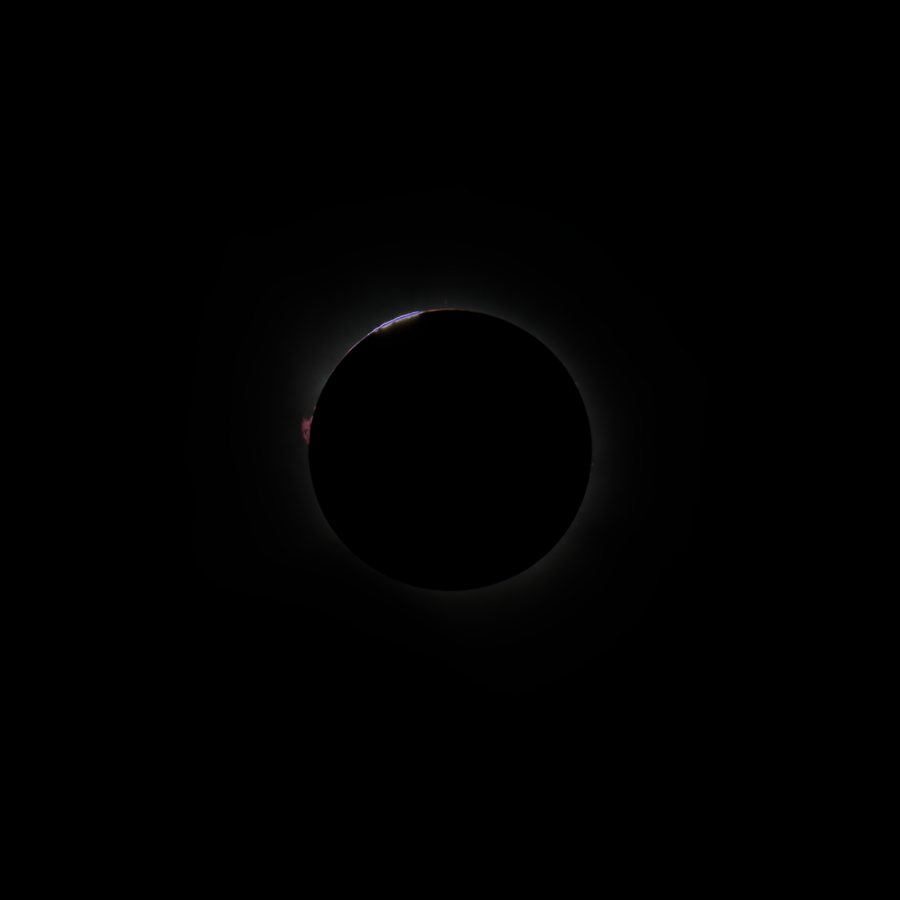
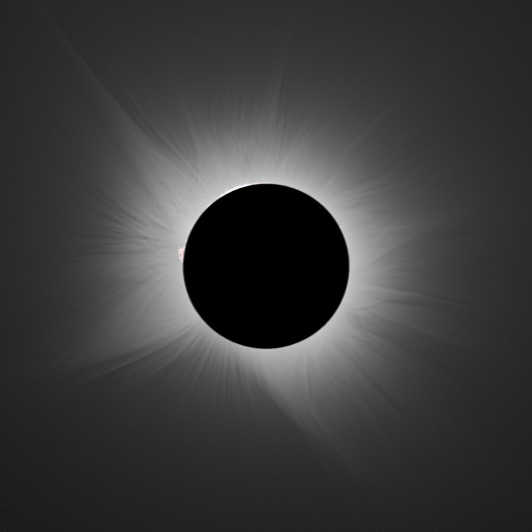
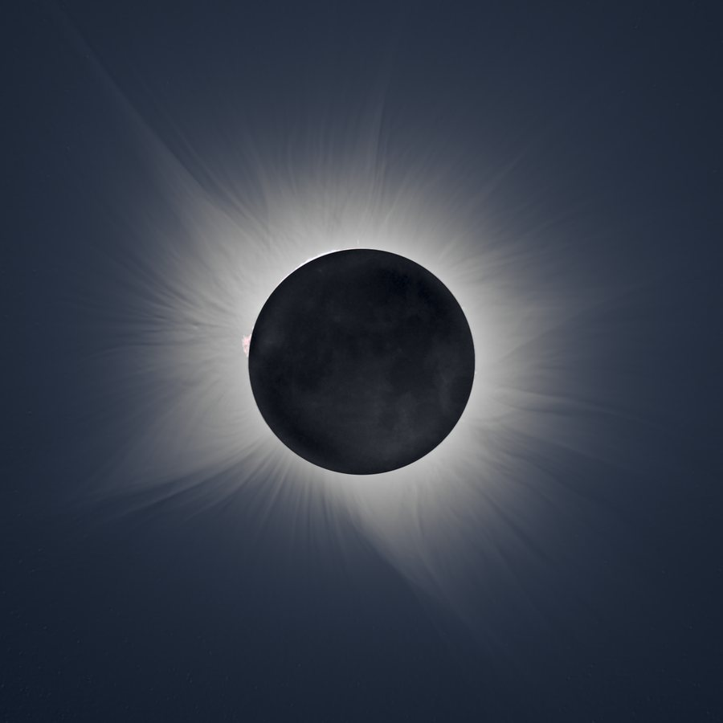
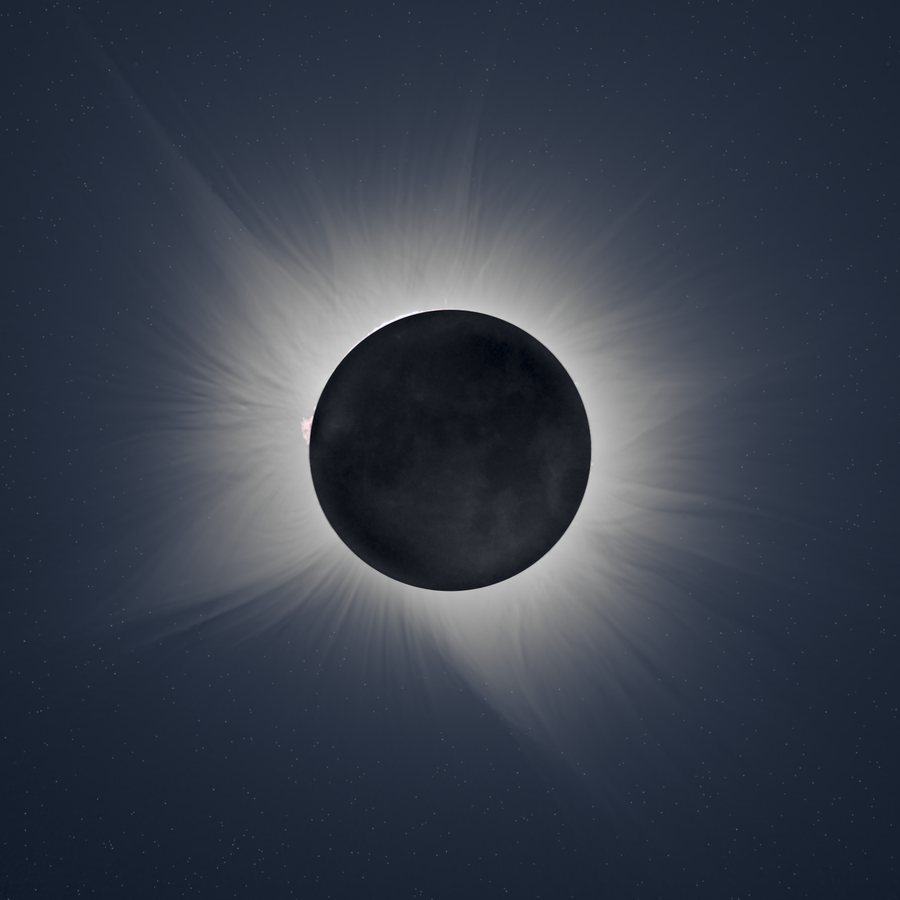
El resultado final. Pulsa 1 para ver el HDR tal cual sale del apilado y sigue etapa a etapa.
1Del RAW al HDR
2Realzar la corona
3El resultado final
Parte 1
Del RAW al HDR
Juntar decenas de fotos de exposiciones distintas en una sola imagen de 32 bits, sin perder nitidez y con una sola Luna.
1.1
El problema: un brillo que cae casi mil veces
La corona es muy brillante junto a la Luna y se apaga deprisa al alejarse. La gráfica es el brillo medido, anillo a anillo, en el HDR de esta página: de 1,04 a 2 radios lunares cae unas 60 veces, y a partir de 2,5 radios se confunde con el brillo del propio cielo de la totalidad. A 3 radios es apenas un 13 % más brillante que el cielo a 4 radios.
Restando el cielo, entre el borde de la Luna y 3 radios la corona pierde unas 900 veces su brillo, y las protuberancias y el borde de la Luna brillan todavía más. Ninguna foto sola lo recoge todo con poco ruido: para que la corona lejana tenga señal limpia hay que exponer tanto que el borde de la Luna y las protuberancias se queman, y con la exposición que respeta las protuberancias la corona lejana se queda en el ruido.
Y aunque se junten en un HDR, una pantalla solo enseña unos 8 pasos. Por eso hay dos trabajos distintos: juntar la luz sin perder nada (parte 1) y comprimir ese rango para que se vea, realzando el detalle (parte 2).
1.2
Leer los RAW: la luz tal cual llegó al sensor
Cada RAW (Canon, Nikon, Sony, Fujifilm, Panasonic, Olympus, Pentax, DNG) se revela en lineal: sin curva de tono, sin balance de blancos, sin brillo automático y en 16 bits. Un píxel que recibió el doble de luz vale el doble. Es lo que hace falta para poder sumar fotos de exposiciones distintas.
De cada foto se leen el tiempo, el ISO, el diafragma y la focal. Con ellos las fotos se agrupan por exposición y se ordenan por la luz que recoge cada una:
luz ∝ tiempo × ISO ÷ diafragma²
Las subcarpetas Dark, Bias (Offset) y Flat se reconocen como calibración; «Cromosfera» y «Cenicienta», como fotos de esas capas. Las fotos repetidas o con el mismo nombre se detectan antes de empezar.
1.3
Calibrar: darks, bias y flats
Opcional, y se hace sobre los datos del sensor, antes de revelar:
- Dark (tapa puesta, mismo ISO y misma exposición): se resta. Quita los píxeles calientes, la corriente oscura y el patrón fijo del sensor.
- Bias (tiempo mínimo, mismo ISO): se resta cuando no hay dark de esa exposición y permite escalar un dark de otra (la corriente oscura crece con el tiempo), solo entre ¼ y 4 veces.
- Flat (mismo diafragma y enfoque, luz uniforme): se divide. Quita el viñeteo y las motas de polvo.
Cada «master» es la media de sus fotos descartando, píxel a píxel, lo que se aleja más de 3 desviaciones de la mediana (rayos cósmicos, píxeles raros).
calibrada = (foto − dark) ÷ (flat normalizado)
Medido con fotos reales: una foto de 1/1000 s no sirve de dark para una de 1/4 s; el patrón del sensor no se parece. Por eso la app solo usa darks del mismo ISO y la misma exposición.
1.4
Encontrar la Luna
La Luna es la referencia de casi todo lo que viene después (alinear, apilar, los filtros por radios), así que la app la busca en cada foto, aunque sea de gran angular, tenga árboles o esté quemada.
- En una copia de unos 900 píxeles, la transformada de Hough propone círculos de todos los radios, con tres curvas de tono distintas (raíz, logaritmo y una más suave) para que valga en fotos cortas y largas.
- Cada candidato se puntúa por la parte de su contorno donde hay un escalón oscuro → claro (dentro la Luna negra, fuera la corona) y por cómo cambia el brillo por fuera.
- El ganador se afina a tamaño real: se mide el borde en 360 ángulos y se ajusta un círculo, con precisión de fracciones de píxel.
Si una foto no tiene borde visible (Luna quemada en las exposiciones largas), se usa la Luna común de las demás, nunca la mancha saturada. Y si nada funciona, se puede marcar a mano sobre la vista previa.
1.5
Alinear: con la corona, no con la Luna
Durante la totalidad la Luna se mueve delante del Sol: unos 0,5 segundos de arco por segundo, un 3 % de su radio cada minuto. Con el 600 mm de estas fotos son unos 20 píxeles por minuto. Si todas las fotos se alinearan por la Luna, la corona quedaría movida; por eso el afinado de cada grupo se mide en la corona, que no se mueve, y nunca en la Luna (la alineación de partida puede hacerse con una o con otra).
- Primero, una alineación de toda la imagen por correlación de fase (en el espacio de Fourier, que da el desplazamiento entre dos imágenes de una vez).
- Después, el afinado: cada foto se compara con la mediana de su grupo en 8 a 16 ventanas a tamaño real, colocadas donde hay detalle de la corona. Cada ventana da su desplazamiento con precisión de fracciones de píxel, y de todas sale un ajuste robusto de giro + desplazamiento.
- Las fotos que no se parecen a las demás o que pedirían más de 12 píxeles o 0,3° de corrección se apartan a «_descartadas» (nunca más de un tercio). Luego se revisan una a una con su «Diferencia».
Las exposiciones se alinean entre sí después, cada una con su vecina ya alineada, de la referencia hacia fuera. Si las ventanas de una exposición corta tienen poca señal, se mide toda la zona de la corona o 16 ventanas pequeñas junto al borde de la Luna.
1.6
Promediar cada exposición, con una sola Luna
Las fotos de una misma exposición se promedian: el ruido baja con la raíz del número de fotos (con 9 fotos, a un tercio). Es lo que permite estirar mucho la corona lejana sin que el cielo se llene de grano.
Pero como la Luna se movió entre una foto y otra, un promedio normal deja fantasmas: el borde de la Luna repetido varias veces, un anillo borroso. Easy Corona promedia con una sola Luna:
- La Luna del promedio es la de la foto del centro del grupo.
- Cada foto pesa cada vez más a medida que se aleja de su Luna, así que junto a cada borde solo cuenta la foto que lo tiene en su sitio. No quedan arcos de las otras Lunas.
- Una Luna mal detectada (a más de 0,2 radios de las demás) no entra.
En el HDR se repite la idea: la Luna es la de la exposición con más luz cuyo borde no está quemado.
1.7
Apilar el HDR
Cada exposición ve una parte de la corona. Abajo, el mismo HDR con la luz que recogerían cuatro exposiciones, de la más corta a la más larga (simulado multiplicando el HDR y recortando en el blanco, como hace el sensor):
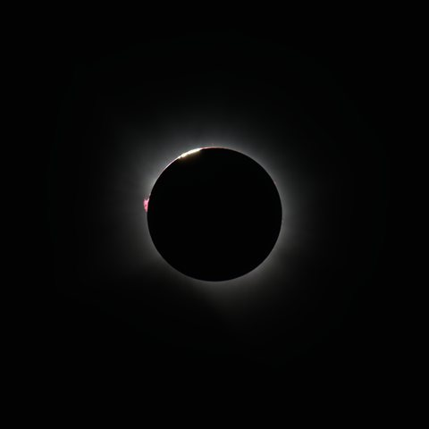
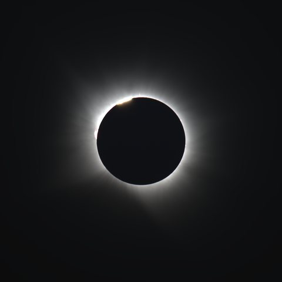
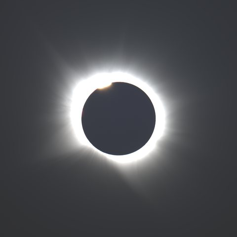
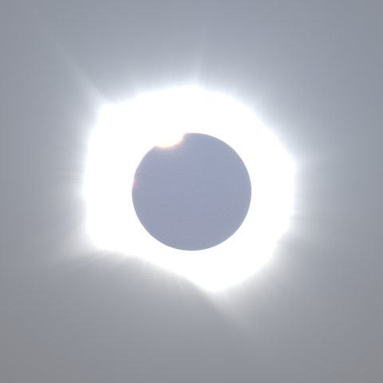
Misma escala. Entre cada pareja de exposiciones se ajusta una recta (ganancia y desplazamiento) con los píxeles bien expuestos en las dos. Así cada foto se pasa a la escala de la de referencia con lo que miden las propias fotos, no con el tiempo del EXIF.
Pesos. Cada píxel de cada exposición cuenta según su valor: poco si está casi negro (solo ruido), mucho a media escala y nada si está saturado (por encima del 99,5 % del máximo de esa foto; las CR3, por ejemplo, saturan en 0,997 y no en 1). El HDR es la media pesada:
HDR = Σ peso · (foto − desplazamiento) ÷ ganancia ÷ Σ peso
La Luna. Dentro y alrededor de la Luna, las exposiciones saturadas no cuentan (solo traen halo) y las demás casi nada: la Luna del HDR es la de una sola exposición, nítida.
Recorte. Al final se recorta el rectángulo que cubren todas las exposiciones alineadas: los bordes que solo tienen algunas fotos tendrían otro ruido y otro brillo. El resultado se guarda en 32 bits de coma flotante.
1.8
Dos focales en una imagen beta
Con fotos de dos objetivos (por ejemplo, 600 y 300 mm), la app hace un HDR de cada focal y los une: el detalle del largo dentro del campo del corto.
- Colocación: la escala de partida sale del tamaño de la Luna en exposiciones con la misma luz (el borde quemado encoge la Luna), y se afina con un registro afín por correlación (ECC) sobre toda la corona, sin lo saturado.
- Brillo: el HDR corto se ajusta al largo como ganancia + un plano, medidos con las dos imágenes suavizadas (si no, el ruido sesga la ganancia y queda un escalón). De paso se corrige el viñeteo del largo.
- Dentro del encuadre largo también entra el corto, por bandas de escala y anillos, cada una pesada por el ruido de cada HDR. Fuera, solo el corto, con una transición suave.
- Después, el ruido y el negro de los filtros se miden solo en el encuadre largo; si no, lo ampliado (casi sin ruido) y el paisaje engañan a los filtros.
Parte 2
Realzar la corona
Comprimir un rango de miles a uno en lo que cabe en una pantalla y hacer visible la estructura fina: rayos, penachos, arcos y filamentos.
2.1
Color: neutro o el original de la cámara
El HDR sale con los colores del sensor, sin balance de blancos (verdoso). Hay dos maneras de ponerle color:
- Corona blanca (neutra). Por canal se mide el fondo (el percentil 1) y la corona (el percentil 99); se resta el fondo y se divide cada canal para que la corona salga blanca. Las cifras se miden en la imagen completa, una de cada 10 filas y columnas.
- Color original. Con un RAW de la sesión, la app toma la matriz de color de tu cámara y el balance con el que disparaste, y pasa el HDR de los colores del sensor a sRGB, como lo revelaría la cámara. El cielo se levanta solo lo justo (el «suelo» se mide en la mitad oscura de la imagen).
Conservar la saturación. Al estirar, un color tenue se aclara mucho y se lavaría. Con esta opción el croma se recalcula para que el color sea el mismo con la luz nueva (pasando por XYZ), no más saturado ni menos.
2.2
Restar el degradado del cielo
Durante la totalidad el cielo no es uniforme: es más claro hacia el horizonte y, alrededor del Sol, la luz dispersa cae poco a poco. Estirado, ese degradado se convierte en un lado de la foto más claro que el otro.
La app ajusta, en una copia de 700 píxeles y solo en el cielo más alejado del Sol, un modelo con dos partes: un plano (el degradado) y una caída radial alrededor de la Luna (la corona lejana, que también está ahí). Se repite descartando lo que se aparta (estrellas, paisaje) y solo se resta el plano: la caída radial está para que la corona no se confunda con un degradado. La resta se hace en lineal, antes de estirar; después, deformaría la corona.
2.3
Estirar: una curva logarítmica sobre la luminosidad
El estiramiento se hace sobre la luminosidad L* del espacio CIELAB (la que ve el ojo), sin tocar el tono: el color se ajusta aparte para que no cambie. La curva es logarítmica:
L*′ = 100 · ln(1 + a · L) ÷ ln(1 + a)L = luminosidad del HDR (0-1); a = cuánto se estira: 15.000 de partida, 20.000-30.000 en los estilos con más detalle
Con a grande, cada década de brillo ocupa un trozo parecido de los tonos: la corona interior y la exterior caben a la vez. «Corona exterior» del modo sencillo es este a: más = más corona lejana, y más ruido en el cielo.
Opcionalmente, un punto negro: el percentil del cielo que pasa a negro puro (medido sin el disco de la Luna).
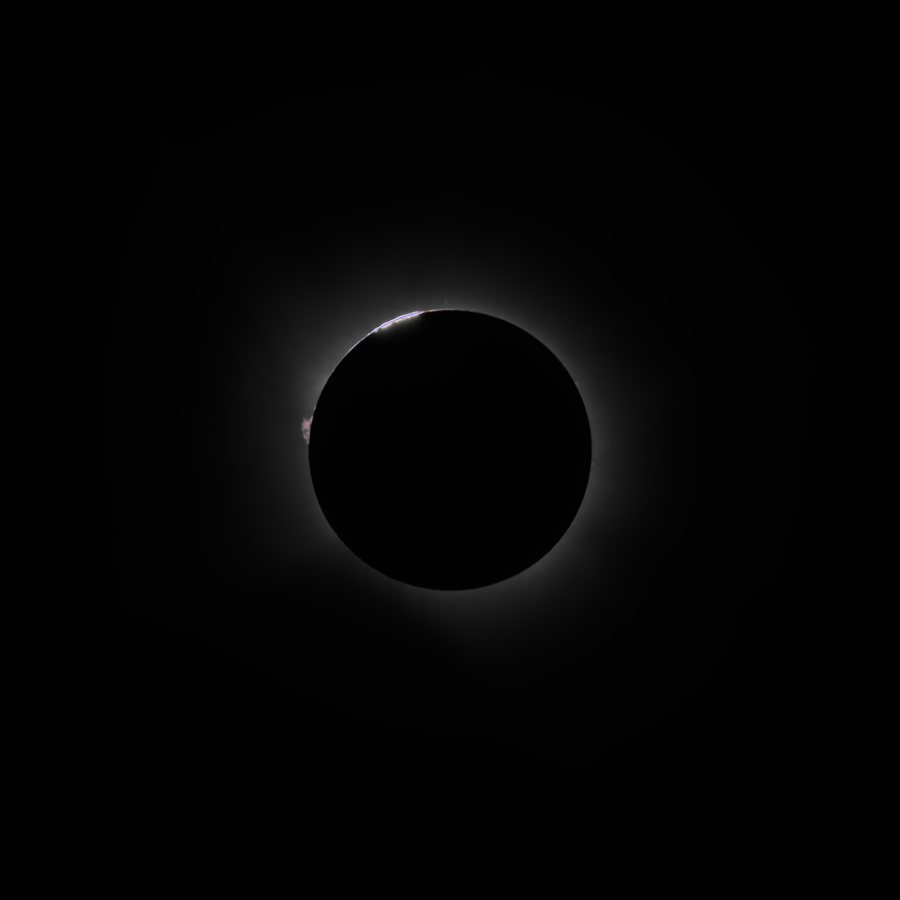
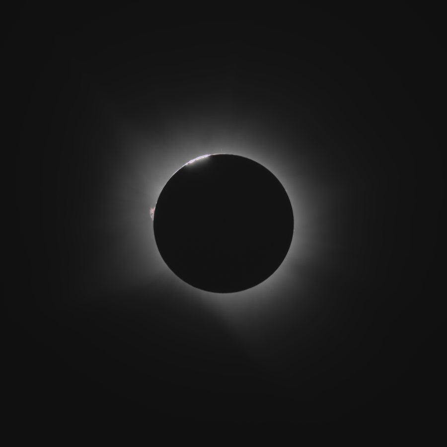
a = 500a = 15.000Mueve la línea. Con un estiramiento suave solo se ve la corona interior; con el de partida, la corona llega hasta los bordes. Ninguno de los dos tiene todavía detalle: la corona es un halo suave porque el brillo cae tan deprisa que la estructura (variaciones de unos pocos por ciento) queda escondida. Eso es lo que sacan los filtros siguientes.
2.4
Ruido: el cielo lejano y el color
Los filtros de detalle realzan todo lo pequeño, también el grano. Antes de ellos:
- Medias no locales (NLM) sobre la luminosidad, solo lejos del Sol: entra poco a poco de 1,5 a 3 radios, así que la corona interior queda intacta. Cada píxel se sustituye por la media de los píxeles cuyo entorno (parches de 7 × 7 en una zona de 21 × 21) se le parece: el grano se va y los rayos, que se parecen a sí mismos a lo largo, se quedan. La fuerza es 0,6 veces el ruido medido en el cielo lejano (más deja «gusanos»).
- Ruido de color: los canales de color (a*, b*) se suavizan a partir de 1,2 radios. El ojo ve el detalle en la luminosidad, así que la corona no pierde nitidez y desaparecen las motas de colores.
Medias no locales: Buades, Coll y Morel, 2005.
2.5
Detalle fino: MGN, WOW y NAFE
Los tres son métodos publicados para imágenes de la corona y resuelven el mismo problema: el contraste de la estructura es pequeño y cambia muchísimo de dentro a fuera, así que hay que igualarlo localmente. Cada uno da un mapa de detalle D entre −1 y +1 (abajo, en gris: blanco = más claro que su entorno, negro = más oscuro), que luego se suma a la imagen.
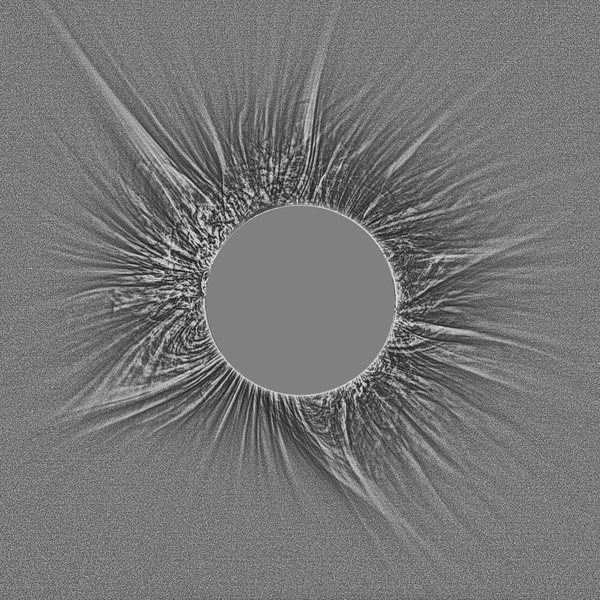
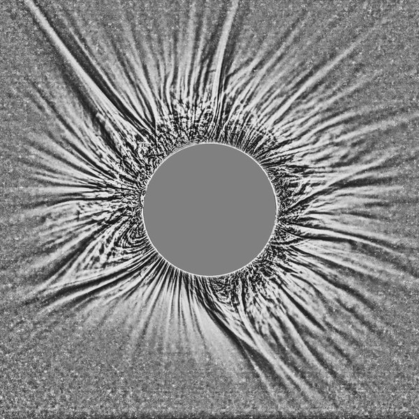
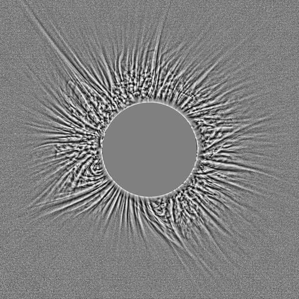
MGN · normalización gaussiana multiescala
En 6 escalas (de 1 a 32 píxeles con una Luna de 620, doblando cada vez) se resta a cada píxel la media de su entorno y se divide por la desviación de su entorno. Así un detalle vale lo mismo junto al Sol que lejos: lo que cuenta es cuánto se aparta de lo que le rodea. Cada escala se comprime con un arcotangente y se promedian.
D = media de las escalas de arctan(k · (L − media) ÷ desviación)
Mejora de la app: en el cielo liso la desviación es solo ruido, y el MGN lo subiría hasta el nivel de los rayos. Se le pone un suelo, la desviación típica del cielo lejano (más allá de 3,5 radios): donde solo hay ruido ya no se amplifica, y donde hay estructura casi no cambia nada.
Morgan y Druckmüller, 2014.
WOW · blanqueo por ondículas
La imagen se separa en bandas de escala (diferencias entre suavizados sucesivos: cada banda lleva solo el detalle de su tamaño) y cada banda se divide por su potencia local. Todas las escalas y todas las zonas quedan con la misma potencia: «blanquear» el espectro. Luego se suman y se comprimen.
Mejora de la app: cada coeficiente se atenúa cuando su potencia se acerca a la del ruido de esa banda (la mayor entre el ruido del píxel y lo que mide la banda en el cielo lejano), como propone el artículo. Sin eso, el cielo sale tan «detallado» como la corona.
Auchère, Soubrié, Pelouze y Buchlin, 2023.
NAFE · ecualización difusa adaptada al ruido
Una ecualización de histograma local: cada píxel pasa a valer la fracción de su entorno (4 % del radio lunar) que es más oscura que él. La comparación es «difusa»: dos valores que se diferencian en menos que el ruido cuentan como medio iguales, así que el cielo liso queda en gris y la estructura real no.
Druckmüller, 2013.
Cómo se suma. La imagen estirada se pasa primero por una curva de tono (potencia 0,6, que levanta los tonos medios sin quemar el borde de la Luna) y luego el detalle multiplica:
resultado = base · (1 + cantidad · D)
El color se escala con lo que se aclara cada píxel, para que la corona tenue no se lave. «Detalle fino» del modo sencillo mueve la mezcla y la cantidad. Los estilos de la app usan solo la curva (cantidad 0) y sacan el detalle con los pases: el WOW, sumado a los pases, puede dar «escamas» a tamaño real.
2.6
Pases de realce: máscara de enfoque en coordenadas polares
La corona está hecha de estructuras radiales: rayos que salen del Sol. Un enfoque normal desenfoca en círculo y realza también el grano. Los pases desenfocan con una mancha alargada a lo largo de la circunferencia alrededor del Sol, con un radio para la dirección radial (σr) y otro para la tangencial (σt):
resultado = imagen + intensidad · (imagen − desenfoque polar)
Con σr muy pequeño y σt grande, lo que se resta es la media de cada anillo en un arco: lo que queda es exactamente lo que cambia de un ángulo a otro, los rayos. Los estilos usan pases solo tangenciales (σr 0,35 px, σt 8, 20 y 40 px a tamaño real).
- Junto a la Luna: antes de desenfocar, los píxeles del disco cercanos al borde se rellenan con la corona de al lado; si no, el disco negro entraría en el desenfoque y dejaría un anillo oscuro.
- Lejos del Sol: en los estilos, la imagen que entra a los pases se suaviza (4 px) a partir de 1 a 1,5 radios, así los pases marcan los rayos y no el grano.
- El cálculo se hace solo en la franja de radios que puede cambiar cada píxel: el mismo resultado, hasta unas 37 veces más rápido que la suma completa.
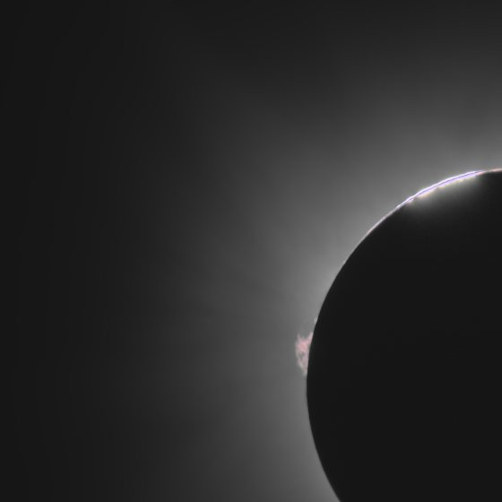
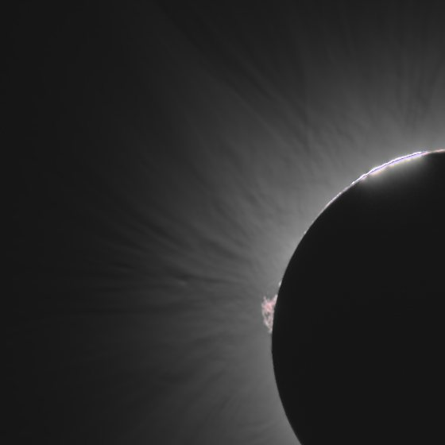
EstiradaPases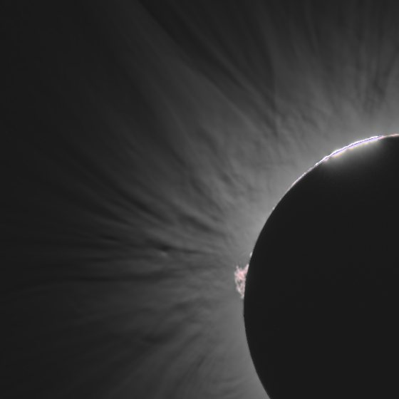
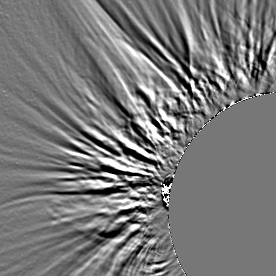
2.7
Corona interior: menos filtro junto a la Luna
Junto al borde de la Luna la corona es tan brillante y cambia tan deprisa que cualquier filtro de detalle tiende a quemarla o a dejar puntos oscuros. «Corona interior» es un degradado radial que multiplica lo que añade cada filtro (pases, detalle fino y normalización radial): poco en el borde de la Luna, entero a partir de «Hasta».
peso(r) = 1 − protección · (1 − s(r))s = transición suave de 0 (borde de la Luna) a 1 (radio «Hasta»)
En el detalle fino se conserva además la media de cada anillo, para que el brillo de la corona interior no cambie: solo se suaviza lo que se aparta de ella. Con protección 0, los filtros actúan como siempre.
2.8
Normalización radial: NRGF, FNRGF y RHEF
Otra manera de comprimir el rango, usada en las imágenes científicas de la corona: a cada píxel se le resta la media de su anillo alrededor del Sol y se divide por la desviación de su anillo. Cada anillo usa todo el rango de tonos, así que la corona interior y la exterior quedan con el mismo contraste y solo se ve la estructura.
z = (L − media del anillo) ÷ desviación del anilloanillos de 4 px con una Luna de 620 px; tono: z hasta ±6 σ, con las luces comprimidas suavemente
- NRGF: un anillo entero, una media y una desviación.
- FNRGF: además, el anillo se divide en 50 sectores y su media y su desviación se aproximan con una serie de Fourier de 10 armónicos en el ángulo (gráfica). Así el contraste también se iguala de un lado al otro del Sol: un penacho brillante no apaga el resto de su anillo.
- RHEF: cada píxel pasa a ser su percentil dentro de su anillo, con la comparación difusa del NAFE y los histogramas suavizados entre anillos vecinos.
Antes de normalizar, el ruido de cada anillo se limpia con ondículas (más donde el filtro lo amplifica) y se quitan los píxeles calientes. El resultado se mezcla con tu imagen en el porcentaje que elijas («Estructura» en el modo sencillo; 0 de partida).
NRGF: Morgan, Habbal y Woo, 2006 · FNRGF: Druckmüllerová, Morgan y Habbal, 2011 · RHEF: Gilly y Cranmer, 2025.
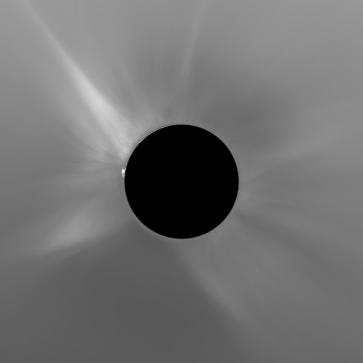
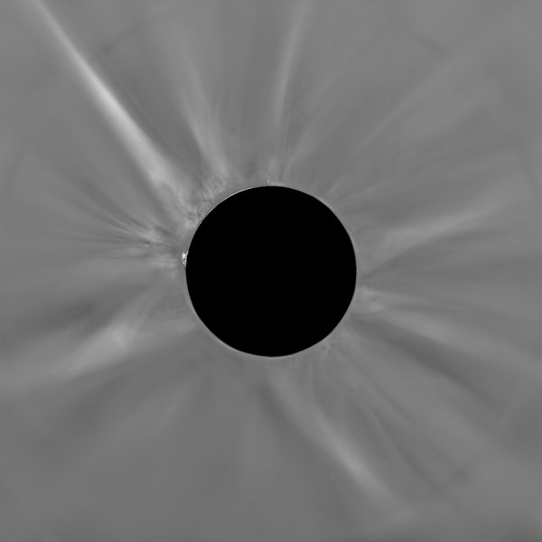
2.9
Brillo final: medido en la corona
Los filtros cambian el brillo, así que al final se estira otra vez con la misma curva logarítmica. En automático, la cantidad se busca (por bisección) para que la mediana de L* en el anillo de 1,3 a 1,5 radios sea la que elijas (55-60 de partida), con un tope para que el cielo no se aclare de más.
Medir en ese anillo, y no en un percentil de toda la imagen, hace que el resultado no dependa del encuadre ni del grano: la misma corona sale con el mismo brillo recortada o con mucho cielo. La referencia se midió en ese mismo anillo en una foto profesional de eclipse.
Parte 3
El resultado final
Lo que se añade al final, sobre la imagen ya realzada: el color del cielo, la Luna, la luz cenicienta, la cromosfera y las estrellas. Por eso cambiarlos se rehace en segundos.
3.1
Color del cielo
Un virado de sombras en CIELAB: a los tonos oscuros se les da el color del cielo durante la totalidad (tono 274°, croma 14, medidos en fotos de eclipse) y se va apagando hacia los claros, así que la corona sigue blanca. La luminosidad no cambia: solo el color.
«Cielo azul» es la intensidad (0-200 %) y «Tono» lo gira hacia el violeta o el turquesa. En los estilos de «Color original», el cielo ya trae el color de la cámara y el virado va a 0.
3.2
La Luna
Los filtros dejan el disco negro (si no, los pases encontrarían un círculo falso). Al final se pinta de un gris uniforme, el que elijas (L* 9-13 en los estilos), o se deja «tal cual» sale del realce.
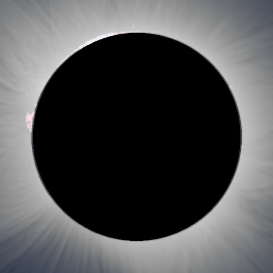
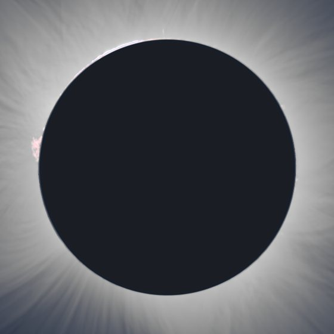
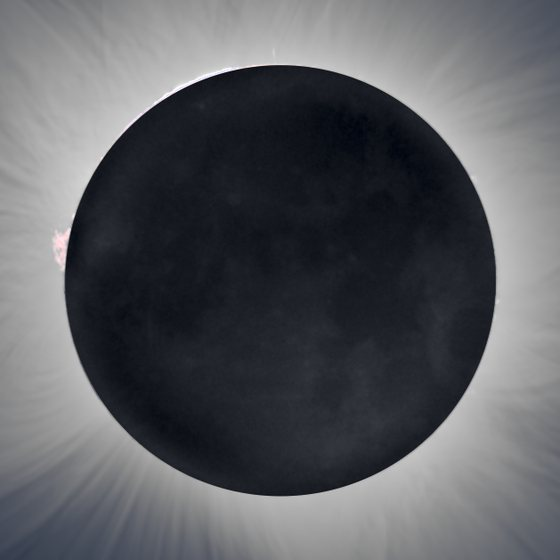
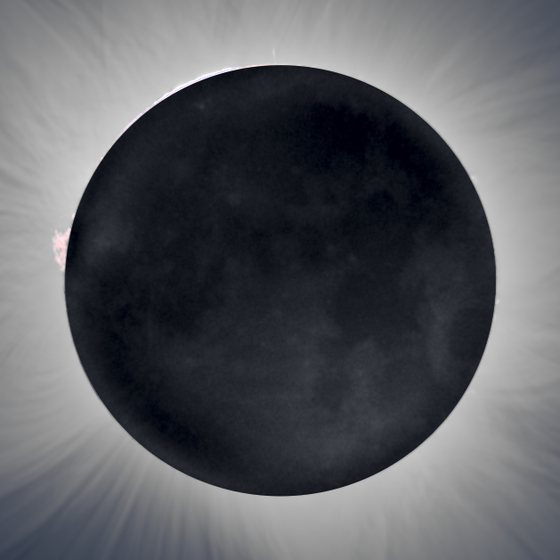
3.3
Luz cenicienta: los mares de la Luna
Durante la totalidad la Luna no es negra: la ilumina la Tierra (la «Tierra llena» que se ve desde la Luna). Es una luz muy débil, que solo recogen las exposiciones largas, y está debajo de la corona más brillante. Easy Corona hace con ella una capa aparte:
- Las fotos largas se alinean por la Luna (no por la corona, como el resto): se ajusta su borde en cada una y se mueve con precisión de fracciones de píxel.
- Cada una se iguala por el brillo de su disco (no importa la exposición), sin lo saturado, y se promedian.
- Al disco se le quita el perfil por radios (la luz dispersa de la corona, que entra desde el borde) y un degradado. Lo que queda son los mares, más oscuros que las tierras altas.
- El detalle llega hasta el borde, sin anillo liso, y sin el arco de luz dispersa junto al limbo.
Del propio HDR: si no hay fotos aparte, se saca del disco del HDR, pesando cada banda de escala por su señal sobre el ruido. Solo se acepta si se parece a los mares de verdad: se compara con una plantilla de la cara visible de la Luna, en todos los giros (y en espejo), y tiene que destacar sobre los demás giros. Si no, la app dice que no se ven los mares.
3.4
Cromosfera y protuberancias
La cromosfera y las protuberancias, rosas, solo se ven en las exposiciones más rápidas, en el borde de la Luna. Pero la Luna se mueve: en unas fotos tapa la cromosfera de un lado y en otras la del otro, y al apilarlas todas con la corona quedarían movidas o tapadas.
Por eso las fotos rápidas se apilan aparte, en el marco del Sol y borrando la Luna de cada una:
- En cada foto se ajusta el borde de su Luna y lo de dentro no cuenta. Lo que una foto no ve lo aporta otra, en la que la Luna estaba más allá.
- Se alinean solo con desplazamiento, contra la que más luz recoge; cada una pesa según su luz (menos ruido) y nada en lo saturado. Si una protuberancia está saturada en todas, el canal recortado se reconstruye con la proporción de color de su alrededor.
- La dispersión de la atmósfera separa un poco los colores (el azul más arriba que el rojo): cada canal se coloca por su borde de la Luna.
- La capa se coloca sobre el HDR y se añade al final: el brillo, por el canal más alto con una curva logarítmica (no se quema), y la Luna es la de un solo momento, nítida, delante de todo. La franja de alrededor, donde estaban la Luna del HDR y sus fantasmas, se rehace con la corona del propio resultado en espejo.
«Exposición» (−1 a +1 EV) solo mueve lo que brilla más que la corona.
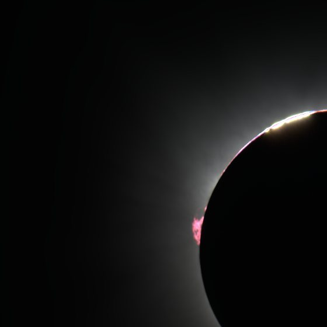
3.5
Estrellas beta
Los filtros de detalle tratan una estrella como un detalle más: la realzan y le dejan alrededor un anillo oscuro (la parte negativa de la máscara de enfoque). Además, en el apilado quedan píxeles calientes sueltos de colores.
- Buscarlas en el HDR (lineal, antes de los filtros), por franjas: una diferencia de gaussianas resalta lo puntual; el ruido se mide por bloques y cada candidata se mide sobre un fondo en plano: flujo, anchura, forma, color y señal sobre ruido. Los píxeles calientes (puntos sueltos rojos, verdes o azules) se reconocen aparte, por su color. Junto al Sol no se busca.
- Quitarlas del resultado con su anillo: el hueco se rellena con un relleno que sigue los bordes de la corona (inpainting de Navier-Stokes) más el grano copiado de la zona de al lado, para que no quede una mancha lisa.
- Ponerlas limpias otra vez, las que elijas de más a menos brillante, con un perfil de Moffat (el de una estrella real a través de la atmósfera), su color y el brillo que quieras. O ninguna, para un cielo limpio: «Quitarlas» quita también las débiles y las deformadas.
La máscara (blanco = estrella con su halo) se puede guardar para otros programas.
Perfil de Moffat: Moffat, 1969 · Inpainting: Bertalmío, Bertozzi y Sapiro, 2001.
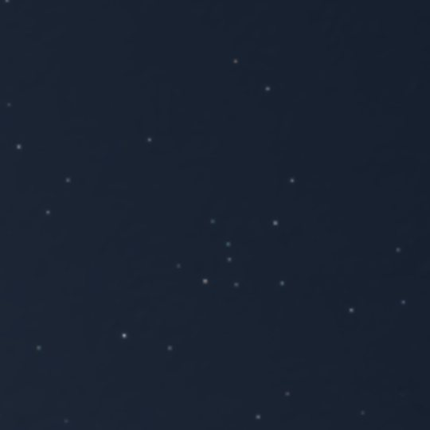
3.6
Los archivos
- 06_final_16bit.tiff: 16 bits con la curva sRGB y su perfil de color. Es el que se abre en Photoshop, Lightroom, Affinity o GIMP.
- 06_final.tiff: el de la app, en 64 bits, con la misma curva sRGB.
- Copias de 32 bits (con «Todos los intermedios» o «Guardar la imagen actual»): en lineal y con un perfil sRGB lineal. Los programas de edición dan por hecho que un TIFF de coma flotante es lineal; si llevara la curva sRGB, al pasarlo a 16 bits se vería quemado y azul.
- El HDR, el resultado y los PNG/JPEG van a la carpeta de destino; los intermedios, a una carpeta de trabajo que se borra si eliges «Solo el resultado final».
3.7
La vista previa es el resultado
La vista previa no es una imitación: llama a las mismas funciones que el proceso real, en el mismo orden, sobre una copia reducida (de 500 a 2200 píxeles), con los radios de todos los filtros escalados con la Luna.
Lo que depende del ruido de cada píxel o de toda la imagen (el color neutro, el negro del detalle fino, la normalización del FNRGF, el ruido del NAFE) se mide en la imagen completa o en una copia tomada píxel a píxel sin promediar, que conserva el ruido de verdad. Si no, la copia reducida, con mucho menos ruido, saldría más oscura o con más contraste que el resultado.
Las pruebas de la app comparan la vista previa con el archivo real, píxel a píxel en L*, a* y b*. Lo único que no se puede ver en pequeño es el grano más fino: para eso está Ampliar, a tamaño real.